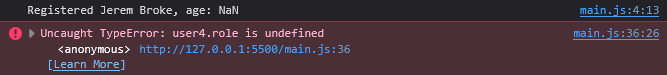

Some Problems With Javascript
Runtime Bugs
function registerUser(user) {
sendWelcomeEmail(user.email, user.fullName);
const age = calculateAge(user.birthYear);
// Simulate registration
console.log(`Registered ${user.fullName}, age: ${age}`);
}
function sendWelcomeEmail(email, name) {
// Simulate sending an email
console.log(`Sending welcome email to ${name} at ${email}`);
}
function calculateAge(birthYear) {
return new Date().getFullYear() - birthYear;
}
const user1 = {
email: 'maria.garcia@northwind.com',
fullName: 'Maria Garcia',
birthYear: 1990
};
registerUser(user1);

const user2 = {
email: 'li.wei@globex.io',
fullName: 'Li Wei'
};
registerUser(user2);

const user3 = {
email: 'oliver.taylor@initech.co',
fullname: 'Oliver Taylor',
birthYear: 1985
};
registerUser(user3);
const user4 = {
email: 'jerem.broke.db@wah.co',
fullName: 'Jerem Broke',
birthYear: '--drop tables',
}
registerUser(user4)
console.log('Is admin?', user4.role.admin)

Bad Tooling
Why TypeScript?
- Superset of JavaScript
- Adds static types
Why TypeScript?
- Catches bugs early
- Powers better editor tooling
- Scales better for teams
TS in the Ecosystem
- Used in React, Angular, Next.js, Node
- Integrated into most libraries: Redux, Axios, Prisma, etc.
- Excellent VSCode integration
let user: string = "Dog";
user = 10; // ❌ ErrorType Inference
const age = 30; // Inferred as numberPrimitives
let isOnline: boolean;
let count: number;
let name: string;Collections
let tags: string[];Object Literals
let user: { id: number; name: string };Interfaces
interface User {
id: number;
name: string;
}Type Aliases & Unions
type Status = "online" | "offline";
type ID = number | string;Function Types
function greet(user: User): string {
return `Hello ${user.name}`;
}void: Function returns nothing
function logClick(): void {
console.log("clicked");
}never: Function never returns
function throwError(message: string): never {
throw new Error(message);
}Generics
function wrap<T>(value: T): T[] {
return [value];
}Generics
const [value, setValue] = useState<number | null>(null);Type Guards
function isString(val: unknown): val is string {
return typeof val === "string";
}
let data: unknown = "hi";
if (isString(data)) {
// inside this block `data` is inferred as string
console.log(data.toUpperCase());
}Type Guards
function hasId(obj: unknown): obj is { id: number } {
return typeof obj === 'object' && obj !== null && 'id' in obj;
}Common Frustrations
- Confusing error messages
- Complex generic types
- Type mismatch despite "knowing it works"
// Error: Type 'undefined' is not assignable to type 'string'.
const [name, setName] = useState<string>();// Error: Type '{ id: number; name: string; }' is not assignable to type 'UserProps'.
<MyComponent user={{ id: 1, name: 'Alice' }} />// Component definition
interface User {
id: number;
name: string;
age: number; // <- required
}
interface UserProps {
user: User; // <- whole user object required
}
function MyComponent({ user, onSelect }: UserProps) {
return (
{user.name} — {user.age}
);
}// Error: Type 'Element | null' is not assignable to type 'HTMLElement'.
const el = document.getElementById("root");
el.style.display = "none";
const el = document.getElementById("root");
el?.style.display = "none";Debugging Complex Types
- Hover + go-to-definition in IDE
- Pretty TS Errors Extension
- Use intermediate type aliases
declare function sdkCall<T, P = unknown>(
endpoint: string,
params?: P
): Promise<ApiResponse<T>>;
// Your wrapper
async function fetchUsers() {
return sdkCall<User[]>("/users?active=true");
}
// Pull out the resolved data in one line
type UsersResp = Awaited<ReturnType<typeof fetchUsers>>; // UsersResp = ApiResponse<User[]>
// Now you can safely do
function handle(resp: UsersResp) {
resp.data.forEach(u => console.log(u.name));
}Best Practices
- Use
strictmode - Avoid
any, preferunknown - Use inference first
- Keep types close to usage
Runtime + Type Safety
const schema = z.object({ name: z.string() });- Use
zod, etc. - Runtime validation + inferred types
Runtime + Type Safety
const formSchema = z.object({ email: z.string().email() });
function submit(data: unknown) {
const parsed = formSchema.safeParse(data);
if (!parsed.success) {
console.log(parsed.error);
}
}Final Thoughts
- TS adds safety without changing your runtime
- It's a long-term productivity investment
- Embrace types as contracts